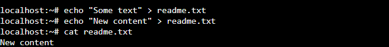
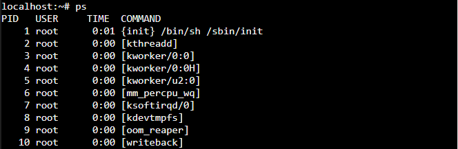

Commands
ls: Lists the contents of a directory.
cd: Changes the current directory.
pwd: Prints the current working directory.

mkdir: Creates a new directory.
touch: Creates a new file or updates the timestamp of an existing file.
rm: Removes (deletes) files or directories.
cat: Displays the contents of a file.
grep: Searches for specific words or patterns in a file.
>: Sends the output of a command to a file, replacing its content if it already exists.
 example">>>: Appends the output of a command to the end of a file.

ps: Shows the programs that are running and their IDs.
top: Constantly updates to show which programs are using the most resources like CPU and memory.
kill: Stops a program.
uptime: Tells you how long your computer has been running since.
free: Checks your computer’s memory, showing how much memory is being used and how much is still available.